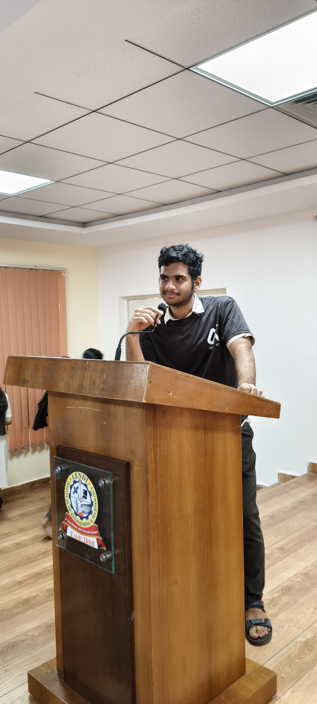
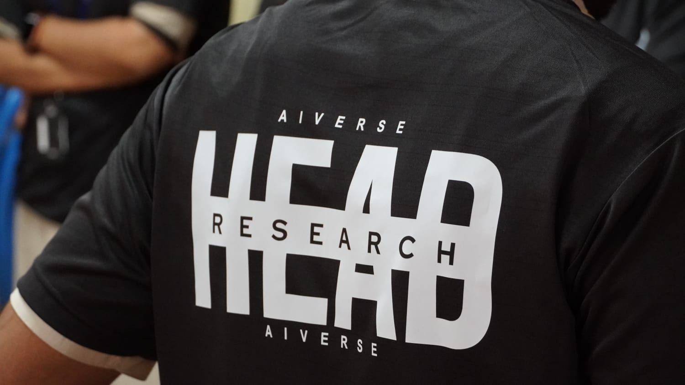
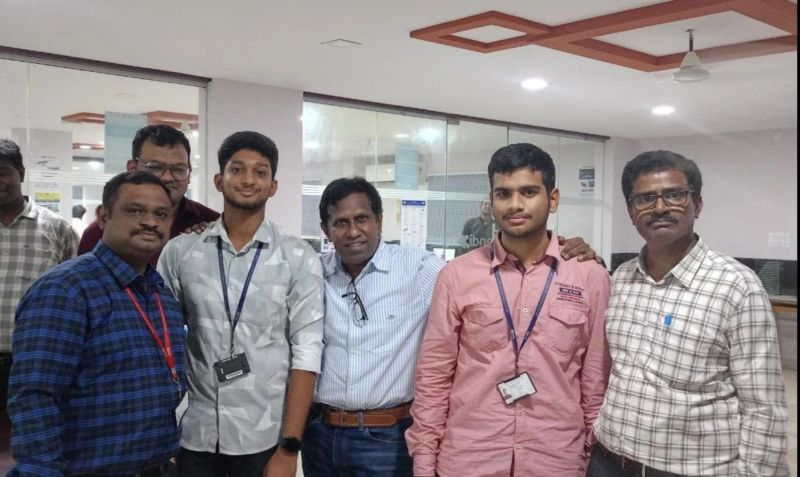
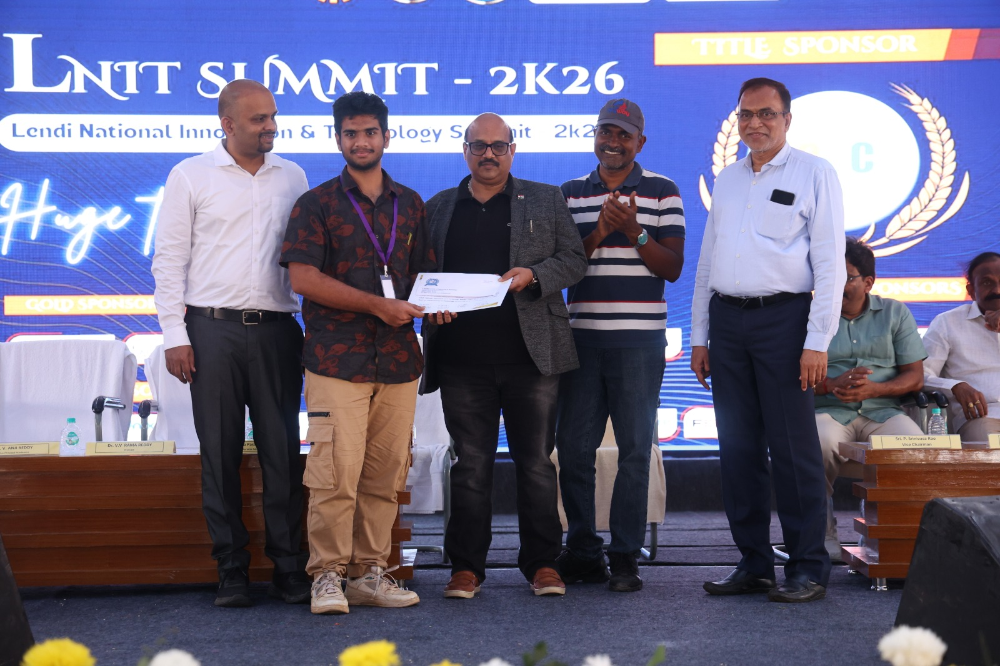
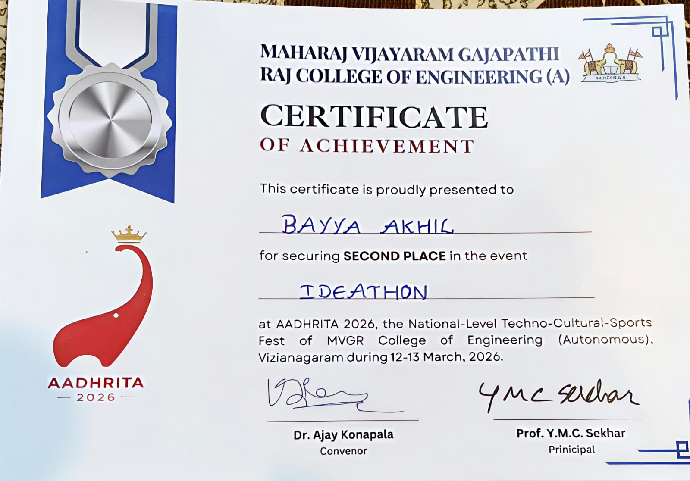

CGPA: 9.05 | B.Tech CSE
I turn complex problems into elegant, user-centric web applications. Specializing in the MERN stack and Java Enterprise ecosystems, I build secure backends, scalable architecture, and clean interfaces that drive real-world impact.
React.js, JavaScript, HTML5, CSS3, Tailwind
Node.js, Express.js, Java Spring Boot, Python
MongoDB, MySQL, Oracle SQL
REST APIs, Spring Security, MVC Pattern, RBAC
Explore how I built an AI-powered smart farming platform, a highly secure Hospital Management System, and an NLP-driven ATS Resume Analyzer that boosted user engagement by 40%.
Read the Case StudiesLendi Institute of Engineering & Technology
Beyond writing code, I am deeply committed to building a culture of innovation. As the Research and Development Lead, I actively bridge the gap between academic theory and industry-level Artificial Intelligence.


Recognition from leading tech summits and senior industry leadership.

"It was an absolute honour to receive direct guidance and feedback from Mr. Venkatesh Poniah Garu, Senior Security Director at Cisco."
His appreciation of ApexResume’s vision and innovative approach, combined with highly actionable technical insights, reinforced the real-world relevance of our work.
This interaction was deeply inspiring. Such recognition from experienced industry leadership motivates me to align my solutions closely with enterprise expectations and strengthens my commitment to building scalable, user-centric software.


Secured the 2nd Prize at this prestigious state-level Ideathon. Competing entirely as a solo participant against 50+ teams, I successfully developed and pitched a complete full-stack solution under strict time constraints.
Won the 2nd Prize at the Rural Innovation Challenge. I independently designed and presented an impactful tech solution, outperforming 40+ teams and demonstrating high-level problem-solving and self-reliance.